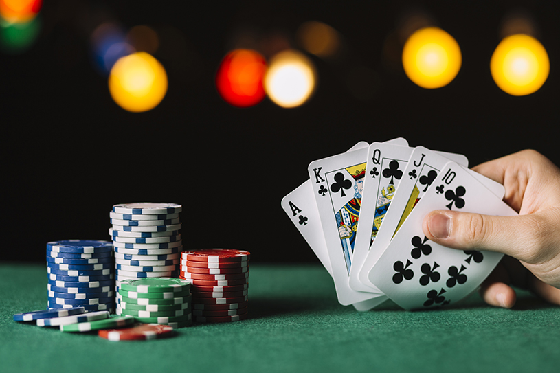
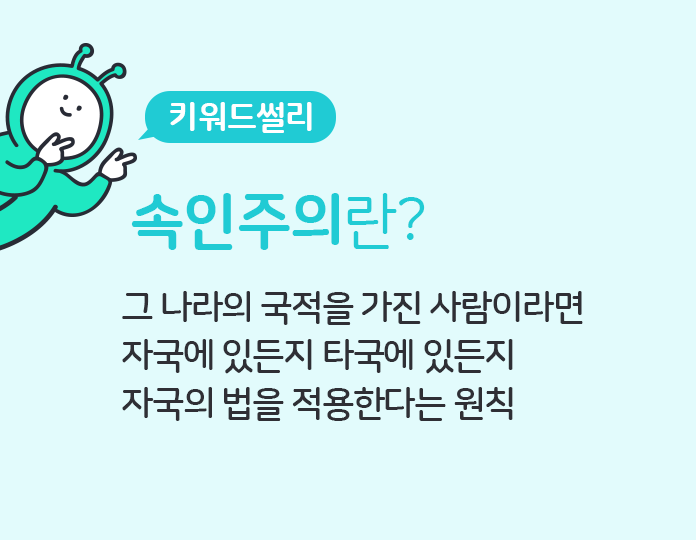
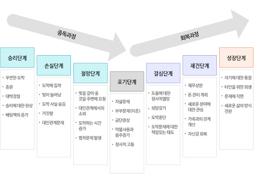

도박이란?

도박은 재물, 재산상의 이익을 걸고 승부를 다루는 모든 행위를 일컫는다. 심지어 설날 윷놀이나 가위바위보 등 제 아무리 사소한 놀이일지라도 승패에 대가가 걸리는 순간 도박의 요소를 지니게 된다. 그렇기 때문에 도박은 사실 대부분의 사람이 살아가는 와중에 자연스럽게 접하는 종류다. 문제는 도박에 걸린 액수가 높아질수록 사채와 보증만큼이나 위험한 짓거리가 된다는 점이다.
헌법 제 246조에 의하면 도박을 한 사람은 1천만원 이하의 벌금에 처하지만 일시 오락 정도에 불과한 경우는 예외라고 한다. 그렇다면 일시 오락임을 어떻게 알 수 있을까? 굳이 하나의 예를 들자면 판돈 VS 본인의 연봉 / 365해서 판돈이 높으면 도박, 낮으면 놀이라고도 한다. 그러나 본인이 부자라서 판돈이 500만원이 넘어가도 단순한 놀이라고 할 수 있을지 생각해보자.

대한민국 법률은 속인주의를 적용한다. 카지노 출입이 법적으로 허용되는 나라에 가서 게임을 하더라도 게임을 한 사람이 한국인이면 귀국 즉시 처벌받는다. 그래서 해외에서 도박 사유로 처벌받는 것은 상습 해외 원정 도박꾼이 외국환거래법 등의 위반 사유로 걸리면서 도박한 죄까지 물어 같이 처벌받는 경우가 대부분이다.
문제점
2015년에 실시한 청소년 도박문제 실태조사에서는 심각한 도박문제를 겪고 있는 청소년이 약 3만 명에 이를 것으로 추정하였으며, 재학 중 청소년의 42. 1%가 도박 게임을 경험했다고 응답할 만큼 청소년들이 쉽게 도박에 노출되고 있음을 알 수 있다.
성인보다 각종 사행성 게임 이용에 제한적인 청소년들이 쉽게 불법 도박을 이용할 수 있는 이유 중의 하나는 바로 스마트폰이다.
스마트폰을 통해 쉽게 인터넷에 접속하고 SNS / 모바일 앱을 통해 쉽게 도박 사이트에 접속할 수 있기 때문이다.
또한 이런 청소년을 타겟으로 불법 도박 사이트 업자들은 온라인 게임 채팅방, SNS 채널에 광고를 올리면서
호기심이 강하고 자제력이 약한 청소년을 끌어들이고 있는데 국내 불법 도박 사이트는 정식 성인 인증 절차가 없이도 이용이 가능하기 때문에
청소년의 도박 중독을 더욱 야기하고 있다. 청소년기에 시작된 도박은 성인이 되면서 중독으로 이어질 수 있고
또래 친구들을 끌어들이게 되면서 도박 중독 확산도 그만큼 빠르다는 문제점을 갖고 있다.

당장에 네이버 지식인에 "청소년 도박"이라고 검색하면 당장 1개월 내에도 도박으로 인한 빚때문에 대출을 알아보고 어떻게 부모님께 말씀드려야 하는지 질문하는 글이 많이 나온다.
심지어 이번 코로나 바이러스로 인해 학교에 가지 않고 온라인 수업을 받는 청소년의 도박중독 문제가 위험 수위를 넘었다.
도박치료

대부분의 중독자들은 스스로 자신은 중독자가 아니라고 말한다. 이들이 스스로 중독자임을 인정하고 치료를 받기로 결심하는 것은 결코 쉬운 일이 아니기 때문에 도박중독의 효과적인 치료를 위해서는 약물치료와 함께 인지행동치료, 단도박 모임과 가족교육 등을 병합하는 것이 좋다.
도박으로 인해 이차적으로 정서적 문제가 동반된 경우는 일시적으로 약물치료를 하는 것이 도움이 된다. 특히, 갈망억제제의 경우 도박 자체의 욕구를 줄여주는데 비교적 효과가 좋은 것으로 알려져 있어 성공적으로 도박을 끊는 경우도 있다. 실제 임상에서는 환자의 유형에 따라 각기 다른 약물을 사용할 수 도 있는데, 환자와의 면담과 성격검사, 심리검사 등을 통해 성격유형과 우울, 불안증상 등을 파악하여 약물을 선택하게 된다.
인지치료란 쉽게 말하면 잘못된 생각을 바로 잡아주는 치료다. 많은 도박 중독자들은 “도박을 하면 많은 돈을 딸 수 있을 것이다”라는 잘못된 생각으로 인해 도박에 빠져 헤어나오지 못하게 된다. 이러한 잘못된 생각을 교정하고 동시에 행동 조절 훈련 등을 함으로써 도박 중독을 치료 하는 것이 인지 행동 치료다.
도박을 끊게 되면 중독자들은 이를 대체할 수 있는 다른 모임이 필요하다. 중독자들의 자발적인 모임인 한국 단도박 모임은 급성기는 물론이고 재활 및 재발방지에 중요한 역할을 하는 단체다. 1984년 결성되어 서울 및 전국 각지에 50개 이상의 지부가 운영 중이다. 자신과 같은 중독증의 문제를 가지고 있는 사람들의 모임이기 때문에 훨씬 거부감도 적고, 모임에 적응이 되어 역할을 맡게 되면 자기 존중감 향상에도 큰 도움이 된다. 특히 가족 모임이 활성화되어 있기 때문에 가족들의 스트레스 관리에도 큰 도움이 된다. 따라서, 초기부터 반드시 병원치료와 함께 단도박 모임에 참여하는 것이 좋다.